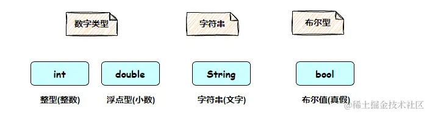
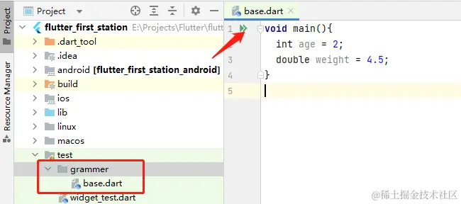
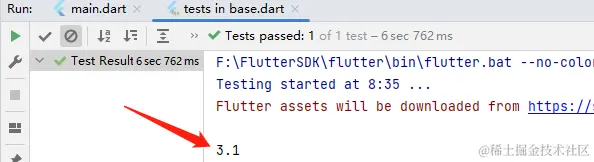
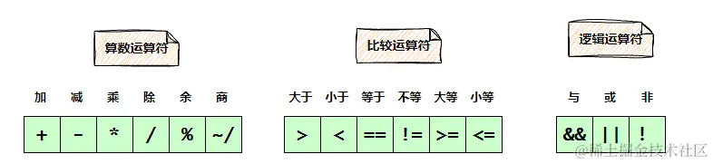
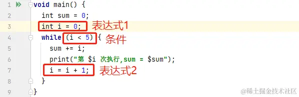

- 01 前言-教程内容导读.md.html
- 02 Flutter 开发环境的搭建.md.html
- 03 新手村基础 Dart 语法 (上).md.html
- 04 新手村基础 Dart 语法 (下).md.html
- 05 Flutter 计数器项目解读.md.html
- 06 猜数字界面交互与需求分析.md.html
- 07 使用组件构建静态界面.md.html
- 08 状态数据与界面更新.md.html
- 09 校验结果与提示信息.md.html
- 10 动画使用与状态周期.md.html
- 11 猜数字整理与总结.md.html
- 12 电子木鱼界面交互与需求分析.md.html
- 13 电子木鱼静态界面构建.md.html
- 14 计数变化与音效播放.md.html
- 15 弹出选项与切换状态.md.html
- 16 用滑动列表展示记录.md.html
- 17 电子木鱼整理与总结.md.html
- 18 白板绘制界面交互与需求分析.md.html
- 19 认识自定义绘制组件.md.html
- 20 通过手势在白板上绘制.md.html
- 21 白板画笔的参数设置.md.html
- 22 撤销功能与画板优化.md.html
- 23 应用界面整合.md.html
- 24 数据的持久化存储.md.html
- 25 网络数据的访问.md.html
- 26 教程总结与展望.md.html
- 捐赠
03 新手村基础 Dart 语法 (上)
无论你处于编程的任何阶段，都应该铭记一点：
对于计算机编程而言，最重要的是 维护数据 的变化。
比如你支付宝中的账户金额；你微信聊天记录的内容；你游戏中的资源装备；你随手拍的一张照片、录制的一段意义非凡的视频，都是数据在计算机中的不同表现形式。作为编程者要通过代码逻辑，保证数据在 用户与应用交互 过程中的准确性，来完成功能需求。
本教程只会介绍最最基础的 Dart 语法，能支撑后续教程的内容即可。无论是自然语言，还是编程语言，语法的学习都是非常枯燥的。对于新手而言，不必任何细节都面面俱到，正所谓贪多嚼不烂。学习应该循序渐进、细水长流，先自己能站立了，再想跑的事。如果已经有 Dart 基础的朋友，本章简单过一下就行了，也可能温故而知新哦 ~
一、基础数据类型
先思考一下，在现实世界中，我们如何表示不同类别的事物? 其实很简单，就是根据事物的特征进行划分，然后 取名字 进行表示。当这种表示形式在全人类中达到共识，就会成为一个认知标准，比如下面是一只猫:
而提到猫，自然就会想到它体型不大，有两个眼睛，两个耳朵，四个腿，脸上有胡须，这就是类型的特征。而 猫 这个名字本身只是一个标志，用于对一类事物的指代。虽然不同的地域可能有不同的叫法，但重要的其实不是它叫什么，而是它是什么，能干什么。
在编程中，数据类型也是类似，它的存在是为了解决：
如何在代码中 表示数据种类 的问题。
解决方法也是一样： 取名字 —- 通过名称区分不同类型数据的特点。在任何编程语言中有 内置基础类型 以供使用，下面来简单看一下 Dart 中基础数据类型变量的定义。到这里，先简单认识一下四种数据类型：
数字、文字是人们日常生活在接触最多的数据，对于任何编程语言来说都是至关重要的。布尔型本身非常简单，只能表示真或假，对逻辑判断有着重要的意义。

1. 数字类型
在日常生活在，数字 是非常必要的，它可以描述数量，也可以进行数学运算。在 Dart 语言中，数字有两大类型： 整型(整数) int 和浮点型(小数) double 。定义变量的语法是 类型名 变量名 = 值 ，下面代码中定义了两个变量：
void main(){
// 整型 age，表示年龄的数值
int age = 2;
// 浮点型 weight，表示体重的数值
double weight = 4.5;
}
在这里学习 Dart 基础知识时，可以在项目的 test 文件夹里，编辑代码做测试。点击三角可以运行代码：

现在通过一个小练习，认识一下代码如何进行简单的逻辑运算：
定义三个浮点型变量 a,b,c，值分别是 2.3, 4.5, 2.5 ； 通过代码计算出平均值 avg ；并将结果输出到控制台。
代码如下，数字量之间可以进行四则运算，求平均值就是将数字相加，除以个数。通过 print 函数可以在控制台输出量的信息：
void main(){
double a = 2.3;
double b = 4.5;
double c = 2.5;
double avg = (a+b+c)/3;
print(avg);
}
运行后，可以看到计算的结果。比如 a,b,c 变量分别代表三只小猫的体重，那这段代码就是：解决获得平均体重问题的一个方案。代码本身的意义在于 解决问题， 脱离问题需求而写代码，就像是在和空气斗智斗勇。

2. 字符串类型
在日常生活中，除了数字之外，最重要的就是 文字，在编程中称之为 字符串。 文字可以为我们提供信息，如何通过代码来表示和操作它，是一件非常重要的事。
在 Dart 中，通过 String 类型表示字符串，字符串值可以通过单引号 'str' 或 双引号 "str" 进行包裹，一般情况下，两者没有太大的区别，用自己喜欢的即可。字符串直接可以通过 + 号进行连接，如下所示：
void main() {
String hello1 = 'Hello, World!';
String hello2 = "Hello, Flutter!";
print(hello1 + hello2);
}
---->[输出结果]----
Hello, World!Hello, Flutter!
通过 $变量名 可以在字符串内插入变量值。如下所示，将计算平均值的输出表述进行了完善：
void main() {
double a = 2.3;
double b = 4.5;
double c = 2.5;
double avg = (a + b + c) / 3;
String output = '$a,$b,$c 的平均值是$avg';
print(output);
}
---->[输出结果]----
2.3,4.5,2.5 的平均值是3.1
另外，也可以通过 ${表达式} 来嵌入表达式，比如：
String output = '$a,$b,$c 的平均值是${(a + b + c) / 3}';
也可以理解为变量是特殊的表达式，在插入时可以省略 {}。对于字符串来说，先了解如何定义和使用就行了，以后如有需要，可以在其他资料中系统学习。
3. 布尔型 bool
布尔型用于表示真假，其中只有 true 和 false 两个值，一般用于判断的标识。布尔值可以直接书写，可以通过一些运算得到。比如数字的比较、布尔值的逻辑运算等。
void main() {
// 直接赋值
bool enable = true;
double height = 1.18;
// 布尔值可以通过运算获得
bool free = height < 1.2;
}
二、运算符
运算符可以和值进行连接，进行特定运算，产出结果；比如加减乘除，大小比较，逻辑运算等。可以说运算符是代码逻辑的半壁江山。对于初学者而言，先掌握下面的三类运算符：

1. 算数运算符
算数运算符作为数学的基础运算，从小就陪伴着我们，大家应该不会感到陌生。它连接两个数字进行运算，返回数值结果：
void main() {
print(1 + 2);//3 加
print(1 - 2);//-1 减
print(1 * 2);//2 乘
print(1 / 2);//0.5 除
print(10 % 3);//1 余
print(10 ~/ 3);//3 商
}
2.比较运算符
比较运算符，也是日常生活中极为常见的。它连接两个值进行运算，返回比较的 bool 值结果 ：
void main() {
print(1 > 2); //false 大于
print(1 < 2); //true 小于
print(1 == 2); //false 等于
print(1 != 2); //true 不等
print(10 >= 3); //true 大于等于
print(10 <= 3); //false 小于等于
}
3.逻辑运算符
逻辑运算符，用于连接 bool 值进行运算，返回 bool 值。 理解起来也很简单，&& 表示两个 bool 值都为 true，才返回 true ; || 表示两个 bool 值有一个是 true，就返回 true ; ! 之后连接一个 bool 值，返回与之相反的值。
如下代码所示，open 和 free 是两个 bool 值，表示条件。通过 && 运算得到的 bool 值表示需要同时满足这两个条件，即 免费进入 需要公园开放，并且可以免费进入：
void main() {
// 公园是否开放
bool open = true;
// 是否免费
bool free = false;
// 公园是否免费进入
bool freeEnter = open && free;
}
三、流程控制
如果是运算符是代码逻辑的半壁江山，那流程控制 就是另外一半。流程控制可以分为 条件控制 和 循环控制；其中：
条件控制 可以通过逻辑判断的语法规则，执行特定的分支代码块。 循环控制 可以让某个代码块执行若干次，直到符合某些条件节点结束。
1. 条件流程 : if - else
如果怎么样，就做什么，这种选择执行的场景，在日常生活中非常常见。而 if - else 就是处理这种选择分支的语法。 if 之后的 () 中填入布尔值，用于逻辑判断；条件成立时，执行 if 代码块；条件不成立，执行 else 代码块。如下代码根据 free 布尔值，打印是否可以免费入园：
void main() {
double height = 1.18;
// 布尔值可以通过运算获得
bool free = height < 1.2;
if(free){
print("可免费入园");
}else{
print("请购买门票");
}
}
2. 条件控制 : switch - case
if - else 只能对 bool 值进行逻辑判断，进行分支处理。某些场景中需要对更多类型的值进行判断，这时就可以使用 switch - case 进行分支处理。
如下代码所示，根据字母等级，打印对应的评级信息，其中 switch 后面的括号在是校验值， case 之后是同类型的值，当 case 后的值和校验值一致时，会触发其下的分支逻辑。 default 分支用于处理无法匹配的场合。
void main() {
String mark = 'A';
switch (mark) {
case 'A':
print("优秀");
break;
case 'B':
print("良好");
break;
case 'C':
print("普通");
break;
case 'D':
print("较差");
break;
case 'E':
print("极差");
break;
default:
print("未知等级");
}
}
3. 循环流程 - for 循环
有些情况下，我们需要不断执行某一段逻辑(循环体)，直到条件完成(循环条件)，这就是循环控制。
for 循环中，() 里有三个表达式，通过 ; 隔开，
第一个表达式是进入循环之前执行的语句，在循环过程中不会再次执行； 第二个表达式是循环条件，每次循环体执行完毕，都会校验一次。当条件满足时，会执行下次循环。 第三个表达式在每次循环体执行完毕后，都会执行一次。
如下代码的含义就是：在循环开始时定义 i 整数变量，赋值为 0， 在 i < 5 的条件下，执行循环体；每次循环体执行完毕后，让 i 增加 1 。 循环体中对 i 值进行累加，并且打印信息：
void main() {
int sum = 0;
for (int i = 0; i < 5; i = i + 1) {
sum = sum + i;
print("第 $i 次执行,sum = $sum");
}
}
---->[输出结果]----
第 0 次执行,sum = 0
第 1 次执行,sum = 1
第 2 次执行,sum = 3
第 3 次执行,sum = 6
第 4 次执行,sum = 10
注: i = i + 1 可以简写为 i += 1, 其他的算数运算符也都有这种简写形式。
另外，表示整数 i 自加 1 ，也可以简写为 i++ 或 ++i。两者的区别在于对 i 赋值的先后性, 自减 1 同理。如果初学者觉得简写难看懂，可以不用简写。
---->[情况1：i++]----
int i = 3;
int a = i++; //执行赋值后i才自加,故a=3
print('a=$a,i=$i');//a=3,i=4
---->[情况2：++i]----
int i = 3;
int a = ++i; //执行赋值前i已经自加,故a=4
print('a=$a,i=$i');//a=4,i=4
4. 循环流程 - while 循环
for 循环和 while 循环并没有什么本质上的区别，只是形式上的不同，两者可以进行相互转换。下面是类比 for 循环中的三块，将上面的代码转换为 while 循环。

可能有人会问，既然 while 循环和 for 循环可以相互转化，那为什么不干掉一个呢? 就像菜刀和美工刀虽然都可以完成切割的任务，但不同的场景下会有更适合的工具。 while 只需要关注循环条件，在某些场合下更简洁，语义也很不错； for 循环的固定格式，更便于阅读，可以一眼看出循环的相关信息。
另外还有 do - while 循环，算是 while 的变式。 do 代码块中是循环体，while 后依然是条件。 do - while 循环的最大特点是： 先执行循环体，再校验条件。也就是说，它的循环体必然会被执行一次。
void main() {
int sum = 0;
int i = 0;
do{
sum += i;
print("第 $i 次执行,sum = $sum");
i = i + 1;
} while (i < 5);
}
根据不同的场景，可以选择不同的形式。 但千万别被形式整的晕头转向，记住一点：它们在本质上并没有区别，都是控制条件，执行循环体。而且它们之间都可以进行转换。
5. 中断控制 - break 和 continue
在循环流程中，除了循环条件可以终止循环，还可以通过其他关键字来中断循环。
break 关键字: 直接跳出循环，让循环终止。 continue 关键字：跳出本次循环，将进入下次循环。
void main() {
// ---->[break情景]----
for (int i = 0; i < 10; i++) {
if (i % 3 == 2) {
break; //直接跳出循环
}
print("i:$i"); //打印了 0，1
}
// ---->[continue情景]----
for (int i = 0; i < 10; i++) {
if (i % 3 == 2) {
continue; //跳出本次循环，将进入下次循环
}
print("i:$i"); //打印了 0，1，3，4，6，7，9
}
}
四、函数的定义和使用
函数是一段可以有输入和输出的逻辑单元；通过函数，可以将特定的算法进行封装，简化使用。这里，我们通过一个实际的问题场景来介绍函数：
身体质量指数，是BMI（Body Mass Index）指数，简称体质指数，是国际上常用的衡量人体胖瘦程度以及是否健康的一个标准。
对于一个人来说，只要知道自己的身高和体重，就可以通过公式 : BMI=体重÷身高^2 计算出体质指数。如果每次计算时，都要根据公式计算是非常麻烦的。
void main() {
double toly = 1.8 / (70 * 70);
double ls = 1.79 / (65 * 65);
double wy = 1.69 / (50 * 50);
}
另外，如果某天体质指数 的计算公式改变了，那散落在代码中各处的直接计算都需要修改，这无疑是非常麻烦的。 函数的价值就在于封装算法，下面来体会一下函数的价值。
1. 函数的简单定义
函数可以有若干个输入值，和一个输出值。比如对于计算体质指数 来说，有身高 height 和体重 weight 两个小数。输出是 体质指数 的具体值。如下所示，定义 bmi 函数：函数名前是返回值类型；之后的括号中是参数列表，通过 , 号隔开，每个参数由 参数类型 参数名 构成；{} 中是函数的具体算法逻辑：
double bmi(double height, double wight) {
// 具体算法
double result = wight / (height * height);
return result;
}
需要获取一个人的 体质指数 ，只要调用 bmi 函数，传入身高和体重即可。使用者不需要在意公式具体是什么，如果某天公式改变了，只需要修改 bmi 中的算法实现，其他代码都无需改动。所以，函数的价值不仅在于实现算法逻辑，也能为某个功能提供一个公共的接入口，以应对可能改变的风险。
void main() {
double toly = bmi(1.8, 70);
double ls = bmi(1.79, 65);
double wy = bmi(1.69, 50);
print("===toly:$toly===ls:$ls===wy:$wy===");
}
2. 命名参数
有些时候，函数的参数过多，在调用时需要记清顺序，是比较麻烦的。Dart 中支持命名参数，可以通过参数的名称来传参，不需要在意入参的顺序。通过 {} 包裹命名的参数，其中 required 关键字表示该入参必须传入; 另外，可以用 = 提供参数的默认值，使用者在调用时可以选填：
double bmi({
required double height,
double weight = 65,
}) {
// 具体算法
double result = weight / (height * height);
return result;
}
如下所示，在使用时可以通过 weight 和 height 指定参数，参数的顺序是无所谓的；另外由于 weight 有默认值，在调用时可以不填，计算时会取默认值：
void main() {
double toly = bmi(weight: 70, height: 1.8);
double ls = bmi(height: 1.79);
double wy = bmi(height: 1.69, weight: 50);
}
3. 位置参数
方括号 [] 包围参数列表，位置参数可以给默认值：
double bmi([double height = 1.79, double weight = 65]) {
// 具体算法
double result = weight / (height * height);
return result;
}
在使用时必须要按照参数顺序传入，它和普通参数列表的区别在于：在调用时，可以省略若干个参数，省略的参数使用默认值：
void main() {
double toly = bmi(70, 1.8);
double ls = bmi();
double wy = bmi(1.69);
}
函数是一个非常有用的语法功能，在一个函数中可以调用其他函数，来组织逻辑。上面的 bmi 函数其实只是将一行代码的运算进行封装，已经显现出了很大的价值，更不用说能完成某些特定功能的复杂函数。但封装也很容易造成只会使用，不懂内部实现逻辑的局面，这在即使好事(不用在意底层逻辑，专注上层使用)，也是坏事(底层逻辑有问题，难以自己修复)。
这里给个小作业: 找一个计算公式，通过函数来封装对它的调用
五、本章小结
到这里，对于编程来说最最基础的三个模块: 基本数据类型、运算符、流程控制，就有了基本的认识。这些语法点是代码逻辑实现的基石，对烹饪来说，相当于水、火、面、米、油、盐等最基础的材料，对一顿饭来说不可或缺。
基本的食材可以保证能吃饱，但对于一席盛大的晚宴来说，是远远不够的：酱醋茶酒、鸡鸭鱼肉，是更高等的食物素材。函数、对象可以对代码逻辑进行封装，从而更好地维护代码结构。下一篇，将继续介绍 Dart 基础语法，了解面向对象的相关知识。
© 2019 - 2023 Liangliang Lee. Powered by gin and hexo-theme-book.